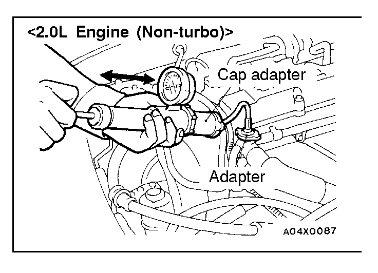
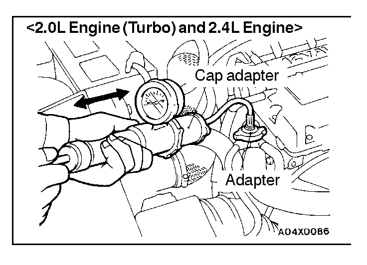

![[Previous]](https://mitsubishitechinfo.com/data/F24S/BUTTONS/fprevg.png)
![[Next]](https://mitsubishitechinfo.com/data/F24S/BUTTONS/fnextg.png)
 
ON-VEHICLE SERVICE
ENGINE COOLANT LEAK CHECK
1.Confirm that the coolant level is up to the filler neck. Install a radiator cap tester and apply 160 kPa (23 psi) pressure, and then check for leakage from the radiator hose or connections.
Caution
1.After testing, clean up all coolant seepage from areas of leakage.
2.When the tester is removed, be careful not to spill any coolant.
3.During tester usage, do not deform the filler neck of the radiator.
4.When pressure testing the cooling system, slowly release cooling system pressure to avoid getting burned by hot coolant.
2.If leakage is present, repair or replace the appropriate part.